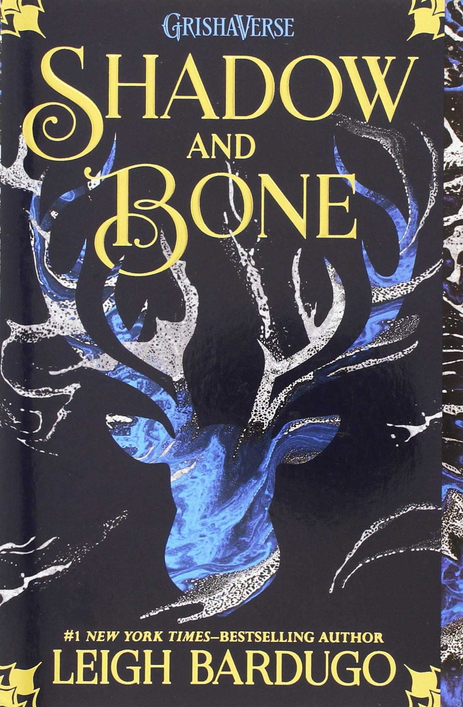

The Complete Sherlock Holmes
Housed in one superb volume, 'The Complete Sherlock Holmes' includes every Sherlock Holmes tale penned by the great Arthur Conan Doyle.

Shadow and Bone is a young adult fantasy adventure and debut novel written by Israeli-American author Leigh Bardugo. It was published by Macmillan Publishers on June 5, 2012.

The Calculating Stars is a science fiction novel by American writer Mary Robinette Kowal.
The book was published by Tor Books on July 3, 2018. It is the first book in the "Lady Astronaut"
series and is a prequel to the 2012 short story "The Lady Astronaut of Mars"

Life Is What You Make It is a novel by Preeti Shenoy. The book was in "Top books of 2011" as per the Nielsen list which is published in Hindustan Times.
It was also on Times of India all-time best sellers of 2011.
This is an astonishing love story set in India in 1990s.
One Indian Girl is a novel by the Indian author Chetan Bhagat. The book is about a girl named Radhika Mehta,
who is a worker at the Distressed Debt group of Goldman Sachs, an investment bank
Alice's Adventures in Wonderland is an 1865 English novel by Lewis Carroll,
a mathematics professor at Oxford University. It details the story of a young girl
named Alice who falls through a rabbit hole into a fantasy world of anthropomorphic creatures.